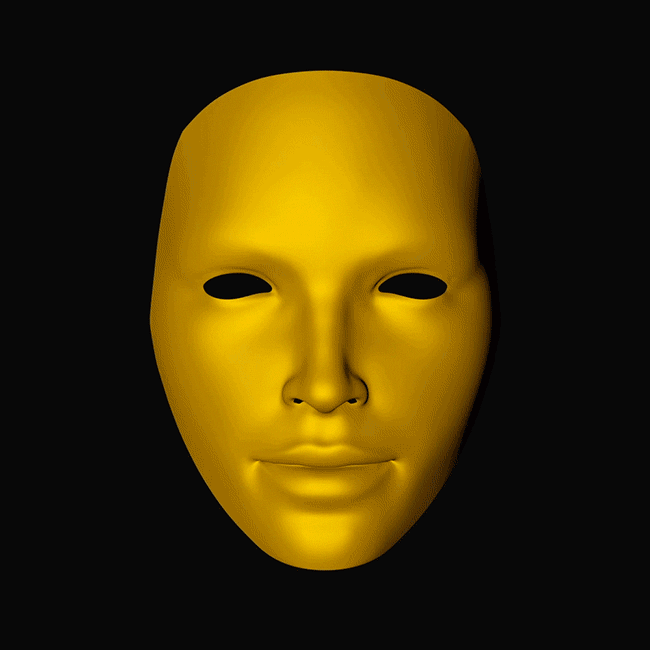

Коллекция оптических иллюзий

Hollow Mask Illusion
Вогнутая маска воспринимается как выпуклое лицо, потому что мозг слишком сильно доверяет знакомой схеме человеческого лица и игнорирует реальные подсказки глубины.

Вогнутая маска воспринимается как выпуклое лицо, потому что мозг слишком сильно доверяет знакомой схеме человеческого лица и игнорирует реальные подсказки глубины.